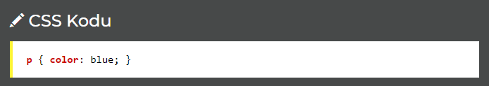
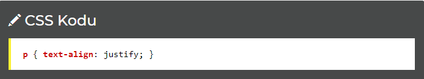
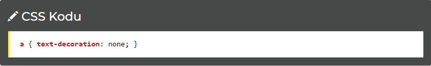
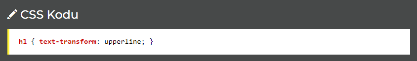

CSS Yazılar
Bu sayfada HTML sayfanızda kullandığınız yazıların değiştirebileceğiniz belli başlı özellikleri (renk, hiza, kalın vb) hakkında bilgi verilecektir.
color: Yazı Rengi
Yazının rengini belirlemenizi sağlar

text-align: Hizalama
Yazının yatay yönde ne şekilde hizalanacağını belirtmenizi sağlar. En çok kullanılan dört hizalama yöntemi:
Aşağıda paragrafların iki yana yaslanacağını belirttik:

text-decoration: Yazı Biçimi
Yazının biçiminde bazı değişiklikler yapmamızı sağlar. Örneğin tarayıcı varsayılanında sürekli A elementlerindeki altı çizgili dekorasyonu kaldırmak için aşağıdaki yazılabilir.

text-transform: Yazıda Değişiklik Yap
Yazılan bir yazıyı otomatik olarak tüm harflerini büyük harfle yazmayı ya da tamamını küçük harfle yazmayı sağlar.

text-indent: Soldan Boşluk
Bir yazının başında belirtilen büyüklükte boşluk bırakmanızı sağlar. Özellikle paragraflar için kullanılır.

NOT: Piksel (px), inç (in), punto (pt), santim (cm), yüzde (%) gibi stillerin sonuna eklenen ölçüler her zaman sayıya bitişik yazılır. 50px doğru ancak 50 px yanlış.